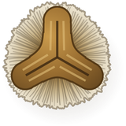

Sporae Dispersae
Fossil spores and pollen linked to the plants that made them, from the Silurian to today: a network you can watch grow from the first descriptions in the 1820s to now, maps of where each genus has been found, a time tree, and a game for putting plants back together from their parts.